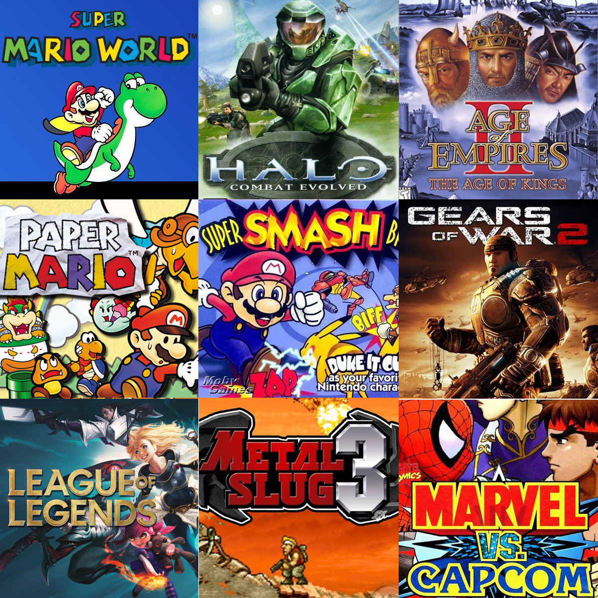

Desde muy pequeño me gusta la tecnología y los videojuegos, el primer videojuego que jugué fue Super Mario Bros y me fascino el mundo de la tecnología desde ese momento.

Algun dia me gustaria ser un desarrollador de videojuegos
Los 9 juegos que más me han marcado
Puedes contactarme haciendo click aca:
Correo